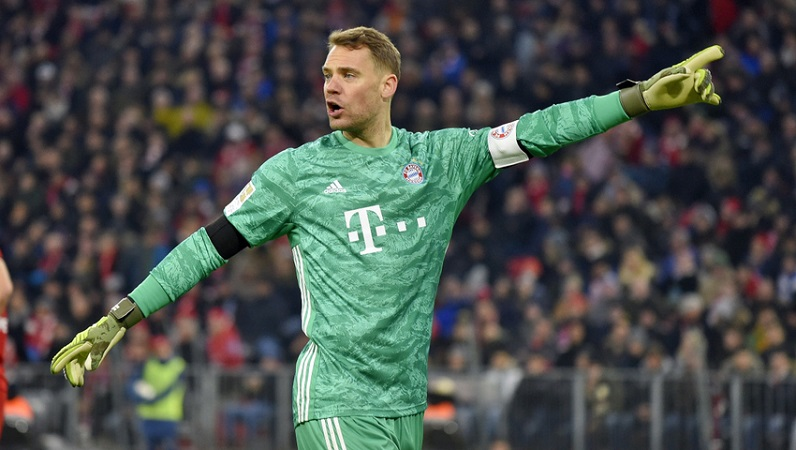

Na zdjęciu widać stadion Bayernu Monachium-Allianz Arena
Bundesliga – najwyższa w hierarchii klasa męskich ligowych rozgrywek piłkarskich w Niemczech, będąca jednocześnie najwyższym szczeblem centralnym, utworzona w 1962 roku i zarządzana przez Niemiecki Związek Piłki Nożnej i Deutsche Fussball-Liga.
Rekordowym mistrzem Bundesligi jest Bayern Monachium, który wygrywał ją 30-krotnie. Wielokrotni mistrzowie Bundesligi mają odznaczenia na strojach piłkarskich w postaci gwiazdek.becnie gwiazdki posiada 6 zespołów: 4 gwiazdki – Bayern Monachium, 2 gwiazdki – Borussia Mönchengladbach, Borussia Dortmund, 1 gwiazdka – Hamburger SV, Werder Brema, VfB Stuttgart. Od sezonu 2016/17 na strojach Bayernu pojawiła się specjalne odznaczenie przyznane 29-krotnym mistrzom
Najwięcej występów w Bundelidze ma Karl-Heinz Körbel-602 meczy. Na ten moment (tzn. 18 maja 2020r.) najskuteczniejszym strzelecem w historii jest Gerd Müller-365 bramek. Warto zaznaczyć że na 3 miejscu pod względem strzelonych bramek w Bundeslidze jest Robert Lewandowski z wynikiem 231 goli.
Aktualna tabela Bundesligi
Przedstawiona obok tabela pokazuje sytuacje w tabeli na dzień 16 maja 2020 roku. Po 32 kolejkach niemieckiej Bundesligi na chwile obecną udział w Lidze Mistrzów mają zapewniony 4 pierwsze zespoły tzn. Bayern, Borussia, RB Lipsk i Borussia Mönchengladbach.
Najpopularniejsi piłkarze Bundesligi
Robert Lewandowski– polski piłkarz występujący na pozycji napastnika w niemieckim klubie Bayern Monachium oraz w reprezentacji Polski, której jest kapitanem. Członek Klubu Wybitnego Reprezentanta, rekordzista pod względem liczby występów w reprezentacji Polski i najlepszy jej strzelec w historii.

Manuel Peter Neuer– niemiecki piłkarz występujący na pozycji bramkarza w niemieckim klubie Bayern Monachium oraz w reprezentacji Niemiec, której jest kapitanem. Złoty medalista Mistrzostw Świata 2014, brązowy medalista Mistrzostw Świata 2010 oraz złoty medalista Mistrzostw Europy U-21 2009.
Timo Werner-niemiecki piłkarz występujący na pozycji napastnika w niemieckim klubie RB Leipzig oraz w reprezentacji Niemiec.Werner jest wychowankiem VfB Stuttgart. 1 sierpnia 2013 roku zadebiutował w barwach VfB Stuttgart w meczu fazy kwalifikacyjnej Ligi Europy z Botewem Płowdiw. Miał wtedy 17 lat, cztery miesiące i 25 dni, co czyniło go najmłodszym debiutantem w historii klubu.
Marco Reus-niemiecki piłkarz występujący na pozycji napastnika lub pomocnika w niemieckim klubie Borussia Dortmund oraz w reprezentacji Niemiec.Marco Reus jako junior grał w klubach Post SV Dortmund oraz Borussia Dortmund. W 2006 trafił do rezerw zespołu Rot Weiss Ahlen. W 2007 został włączony do jego pierwszej drużyny, grającej w Regionallidze Nord. W 2008 awansował z klubem do 2. Bundesligi. Pierwszy mecz zaliczył w niej 17 sierpnia 2008 przeciwko FSV Frankfurt.
Kontakt:
Mecze na żywo
Warszawa ul.Sportowa 10
tel. (+48) 612095373
e-mail: meczenazywo@gmail.com